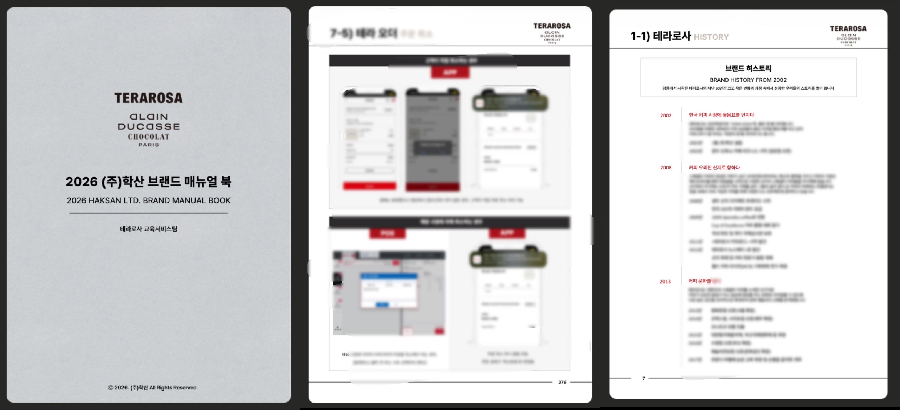
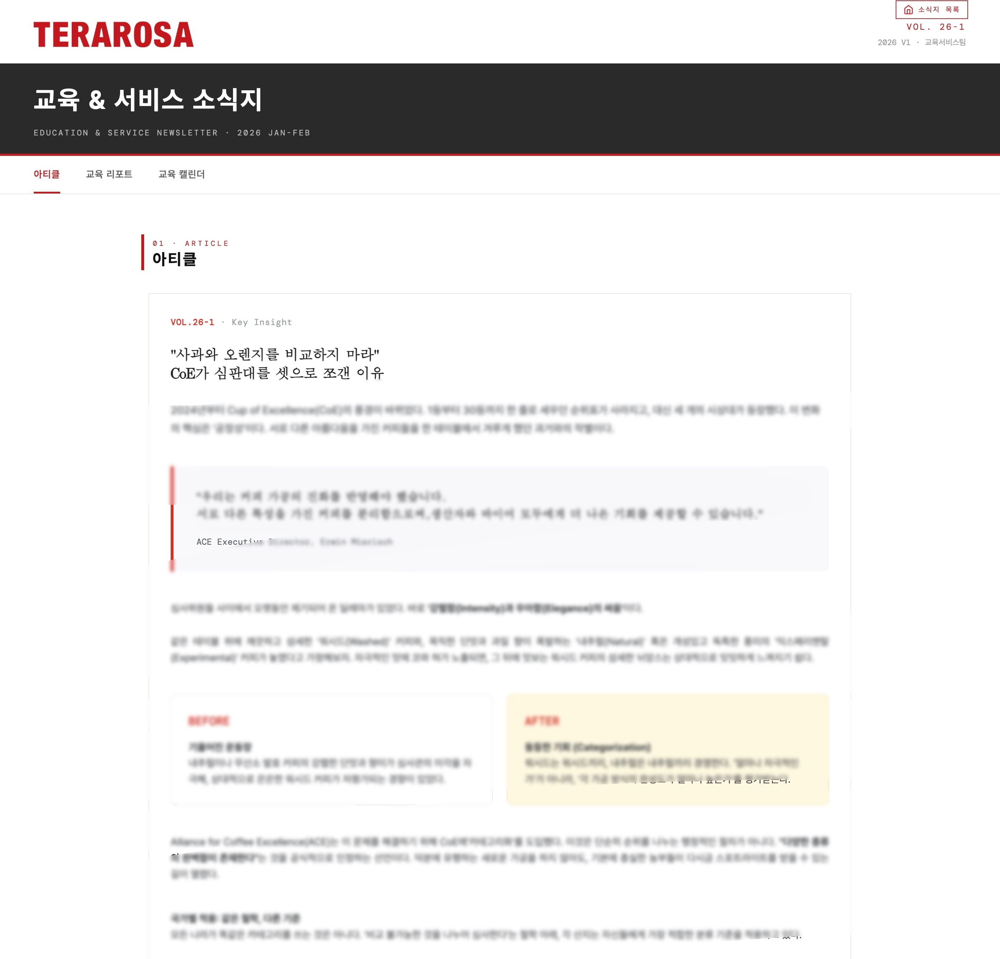
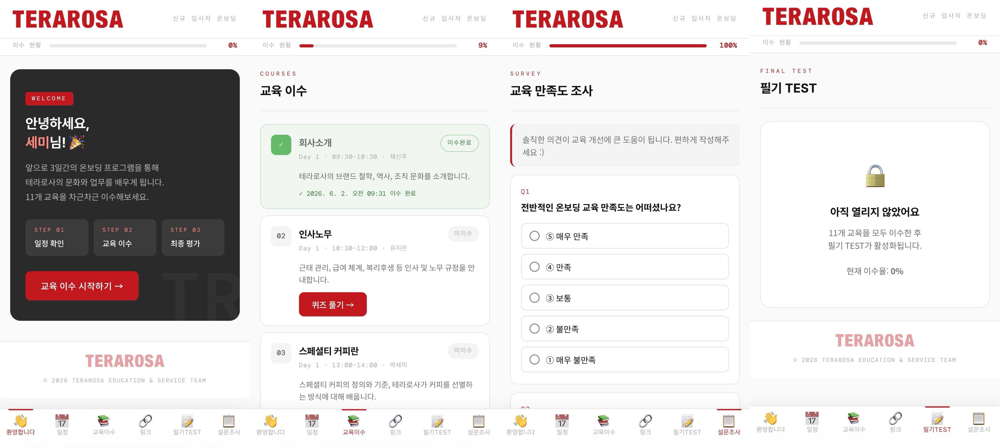
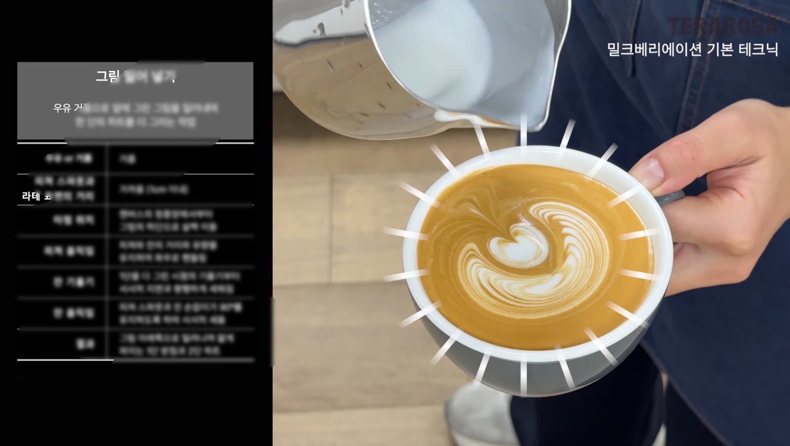
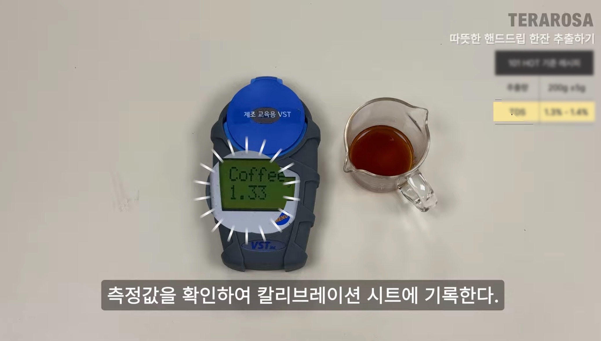
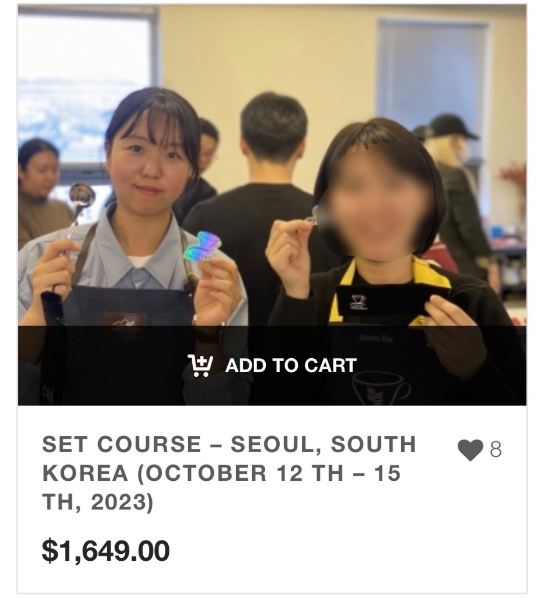

Culture & L&D Portfolio · 박세미
조직의 병목을 데이터와 현장의 목소리로 진단하고,
구성원 모두가 하나의 미션을 향해 뛸 수 있도록 구조화합니다.
현장 실무 3년, Culture & L&D 기획 4년.
컬처는 선언이 아니라 실무에서 완벽하게 작동하는 시스템이어야 함을 증명해 왔습니다.
About
"박세미와 동료라서 참 든든하다."
커리어를 시작한 첫날부터 지금까지 지켜온 단 하나의 목표입니다. 저에게 '일'이란 단순히 과업을 수행하는 것이 아니라, 함께 일하는 동료들이 저를 보며 자부심을 느끼고 안심할 수 있는 단단한 성벽이 되어주는 과정입니다.
이 진심은 압도적인 성장의 동력이 되었습니다. 글로벌 벤더사에서 복잡한 공급망을 관리하며 배운 '프로세스 최적화'의 감각은, 테라로사에서 바리스타를 거쳐 사내 유일의 현장 출신 메인 교육 기획자로 거듭나는 밑거름이 되었습니다. 8년의 시간 동안 현장의 언어를 조직의 시스템으로 번역하며, 온보딩 KPI 124% 달성과 전사 브랜드 매뉴얼 단독 집필이라는 결과로 증명해 왔습니다.
저는 멈춰있는 기획에 만족하지 않습니다. 영상 편집(Premiere Pro)을 독학해 12편의 직무 교육 콘텐츠를 제작하고, 직접 코딩(HTML/CSS/JS)하여 사내 웹 소식지와 온보딩 사이트를 구축합니다. "세미 님이라면 반드시 되게 만든다"는 신뢰를 바탕으로 조직의 빈칸을 가장 전문적인 방법으로 채워나갑니다.
Selected Cases


직접 기획·집필한 통합 매뉴얼북 (좌) / HTML·CSS로 구축한 사내 소식지 (우)

신규 입사자를 위한 온보딩 사이트


독학으로 3개월 만에 제로베이스 구축한 시각화 기반 직무 교육 콘텐츠 예시

미국 커피 전문 기관(ACE) 아시아 정규 교육 퍼실리테이팅 및 글로벌 커뮤니티 빌딩 주도
Retrospective
Next Chapter
8년간 현장의 최전선에서 바닥부터 시스템을 설계하며 얻은 가장 큰 수확은, '어떤 낯선 문제라도 본질을 딥다이브하면 결국 시스템으로 풀 수 있다'는 단단한 확신입니다. 단순히 툴을 도입하고 제도를 론칭하는 데 그치지 않고, 실패를 통해 기민하게 가설을 수정하며 구성원의 마음을 움직여 진짜 변화를 만들어내는 법을 배웠습니다.
이제 이 치열했던 성공과 회고의 경험치를 바탕으로, 더 빠르고 역동적인 비즈니스 환경에서 조직의 스케일업 과정에 동반되는 성장통을 해결하고 구성원의 미션을 정렬하는 기획자로서 다음 챕터를 열고자 합니다.
Contact
좋은 분위기를 넘어, 비즈니스의 성장을 견인하는 강력한 문화를 고민합니다.
막연한 현상을 명확한 언어로 정의하고, 확고한 시스템으로 안착시키는 든든한 조직문화 담당자가 되겠습니다.